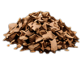
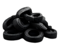
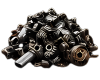

Imagens ilustrativas do equipamento. Configuracoes podem variar conforme projeto.
Sobre o equipamento
O TR-700 foi desenvolvido para oferecer o maximo de desempenho na trituracao de residuos industriais. Sua estrutura reforcada, aliada ao sistema de facas intercambiaveis e aos redutores de alto torque, garante eficiencia, seguranca e longa vida util mesmo nas condicoes mais exigentes.
E a escolha ideal para industrias, recicladoras, madeireiras, empresas de gestao de residuos e diversos segmentos que buscam produtividade e confiabilidade.
Alto desempenhoTrituracao eficiente com alto torque e forca.

Baixa manutencaoProjeto inteligente que facilita inspecoes e trocas.

Robustez comprovadaEstrutura reforcada para trabalho continuo.
Seguranca operacionalSistema de reversao e protecoes integradas.
Principais especificacoes
* A producao pode variar conforme tipo de material, granulometria da peneira e condicoes de operacao.
Aplicacoes
Indicado para a trituracao de uma ampla variedade de materiais:
 Plasticos
Plasticos
Madeira Papel e papelao
Papel e papelao
Borracha e pneus Residuos industriais
Residuos industriais
Sucata metalicaVideo do equipamento em funcionamento
- Facas em aco especial de alta liga
- Eixos macicos usinados
- Redutores de alto torque
- Rolamentos de alta durabilidade
- Estrutura em aco de alta resistencia
- Facil manutencao
Downloads
Baixe os documentos tecnicos do equipamento:
Precisa de uma solucao personalizada?
Fale com nossos especialistas e encontre o equipamento ideal para sua necessidade.
 Falar no WhatsApp
Falar no WhatsApp